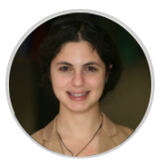

The mission of the Center for Open Data Enterprise is to maximize the value of open data as a public resource that anyone can use.
We believe that open data can support economic growth and social good around the world.
To realize its promise, this global resource needs to be developed and managed in ways that meets the needs of the people and organizations that use it. However, there are currently few effective ways for data users to give input and feedback.
We seek to fill this gap by starting with data users - working with governments, businesses, and nonprofits – to develop smarter open data strategies.
The Center for Open Data Enterprise collaborates with public, private and nonprofit organizations that have a shared interest in advancing demand-driven open data.


The Center for Open Data Enterprise was founded by Joel Gurin, an international authority on open data, and an expert team that has led pioneering work in the field, both domestically and abroad.
President

Partnerships & programs
Research & DESIGN

Communications
Joel Gurin is a leading international expert on open data with a background in government, journalism, nonprofit leadership, and consumer issues. His book Open Data Now(McGraw-Hill), written for a general audience, has helped define this emerging field. Before launching the Center in January 2015 he conceptualized and led the development team for the GovLab’s Open Data 500 project. He previously served as Chair of the White House Task Force on Smart Disclosure, which studied how open government data can improve consumer markets, and as Chief of the Consumer and Governmental Affairs Bureau of the U.S. Federal Communications Commission. For more than a decade he was Editorial Director and then Executive Vice President of Consumer Reports, where he directed the launch and development of ConsumerReports.org, the world’s largest paid-subscription information-based website. Joel Gurin has been a featured speaker at open data conferences around the world and blogs at OpenDataNow.com.
Read LessLaura Manley is the Co-Founder for the Center for Open Data Enterprise, where she leads partnerships and programs. As an open data advocate, Laura developed and launched the GovLab’s Open Data 500, the first comprehensive study of U.S. companies that use open government data to generate new business and develop new products and services.
In addition to her work on open data, Laura has over 10 years of strategic planning experience with multiple international agencies including the World Bank, United Nations Department of Economic and Social Affairs and Office of the High Commissioner for Human Rights, UNICEF, the National Endowment for Democracy, and MasterCard Foundation.
She holds a Masters degree in Public Administration from NYU Wagner focusing on international policy and entrepreneurship and a Bachelors degree in Business Administration from the University of Massachusetts Amherst.
Read LessAudrey is one quarter of the founding team of The Center for Open Data Enterprise, where she leads research and design for The Center's programs. Previously at The GovLab, Audrey worked on the Open Data 500 and co-developed the Open Data Roundtable Series.
Audrey holds a dual Masters in International Affairs and Quantitative Methods from Columbia University, focusing on information and technology policy, applied statistics, and communications. She's been a 2013 Google Policy Fellow, editorial assistant, and consultant.
Read LessKatherine Garcia is a member of the founding team for The Center for Open Data Enterprise, where she manages communications and outreach. Previously she served as a Research Assistant on the Open Data 500 Study and Project Liaison on the Open Data 100 Mexico Study at The Governance Lab at NYU. Prior to joining The GovLab, Katherine served as Press Assistant at the U.S. Mission to the United Nations. She has over 10 years of media and publishing experience. Katherine earned her MPA with an emphasis in Policy Analysis from Baruch College. She serves as Co-President of the Metro NY Chapter of the U.S. National Committee for UN Women, which promotes gender equality and women's empowerment. She also serves on the Board of SustainUS, a non-profit that empowers youth to advance sustainable development. She is passionate about open data because of its impact on governance and human rights. She tweets at @katherinejulia.
Read Less
Visiting fellow

COMMUNICATIONS Intern

RESEARCH Intern

TOOLS & PLATFORMS
Gustavo Magalhaes, originally from Porto, Portugal, is a PhD candidate at the University of Texas at Austin affiliated with UT Austin-Portugal program. He researches the commercial re-use of open government data and civic entrepreneurship.
He has experience in both the private and public technology sectors, having worked at organizations such as Siemens., Banco Santander, and the European Central Bank. He has also provided expert advice and mentorship to early stage tech start-ups at INESC institute in Portugal.
More recently, he collaborated with Code for America as well as with the GovLab at New York University for the OpenData500 project as a researcher. Additionally, he participated in the Open Data Barometer and the Open Data Census as a country reviewer, and is an active member of the Open Austin community group.
He holds BSc. and MSc. degrees from Imperial College of London.
Read LessJulia McCarthy, a sophomore studying Political Science at the University of California, Los Angeles, is an intern at The Center for Open Data Enterprise.
She is spending her spring quarter in DC through the UCLA Center for American Politics and Public Policy program, and while in Washington, she will be working on a research paper looking into the efficacy/effects of sexual assault legislation on college campuses.
Read LessTobias Thorsted, a student from Lund University in Sweden, is an intern at The Center for Open Data Enterprise.
Tobias is finishing up his Bachelor of Arts with a major in Socio-Cultural Anthropology during his year abroad at University of California, Los Angeles. For his spring quarter he was selected to participate in The UCLA Center for American Politics and Public Policy program, where he will be writing a research paper on how qualitative and quantitative methods can potentially complement one another in fostering meaning-driven innovations.
Read LessGreg Elin is an expert on open government data. He started the Sunlight Foundation's Sunlight Labs in 2006 and was one of the first Chief Data Officers in Federal government in 2010. During his time as CDO at the Federal Communications Commission, the FCC launched it's first APIs, the first National Broadband Map, crowdsourced measurements of wireline and wireless broadband speeds, a clearinghouse accessibility features of mobile phones, and the first centralized, online database of 2,000 television stations "public inspection files" including real-time political ad disclosures. Mr. Elin served on the White House Task Force for Smart Disclosure and co-chaired the CIO Council's Subcommittee on Data Sharing. Mr. Elin is currently working GovReady, an open-source toolkit to prepare and certify innovative software and IT systems are secure and approved for government use.
Read LessThe Center for Open Data Enterprise draws on a network of advisors and board members for insight, and guidance. Our advisors bring expertise from many perspectives, including the public, private, and non-profit sectors.